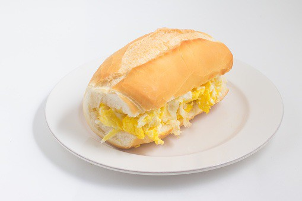

Awesome Egg Sandwich
Description
Get ready for a quick and delicious meal with the awesome Egg Sandwich! Perfect for those moments when you need something tasty but don't want to spend too much time in the kitchen.
Ingredients
- bread
- egg
- butter
Steps
- Start by cracking a fresh egg into a heated skillet with a little melted butter. Cook the egg intul the whites are firm and the yolk is still slightly runny.
- While the egg cooks, toast two slices of bread of your choice until golden and crispy. If you prefer, you can spread some butter on the slices to add an extra touch of flavor.
- When the egg is ready, carefully place it onto one of the toasted bread slices. You can season the egg with salt and pepper if desired, to enhance the flavor.
- Cover the egg with the second toasted bread slice, forming a sandwich. Now you have a delicious egg sandwich ready to be enjoyed!